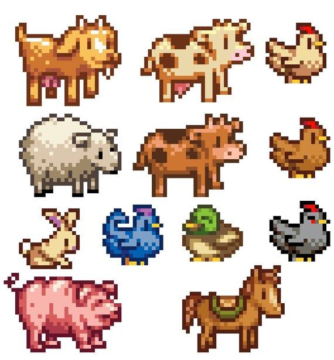

¡DANOS TU OPINIÓN!
Nombre
¿Es la primera vez que establecías contacto con stardew valley o con el mundo de los videojuegos?
¿Cuáles son tus primeras impresiones sobre el juego?
Muy interesante
Bueno
Meh
Nada interesante
Marca lo que te haya gustado
Los animales

Los cultivos
Los aldeanos
Otros
¿Por qué razones recomendarías a otra persona jugar o no jugar a este juego?
Si pudieras añadir cualquiera de estas cosas al juego, ¿cuál te haría más ilusión? (puede que en un futuro tu opinión pueda afectar al juego de forma importante).
Nuevos cultivos
Más animales
Otro personaje
Nuevas zonas